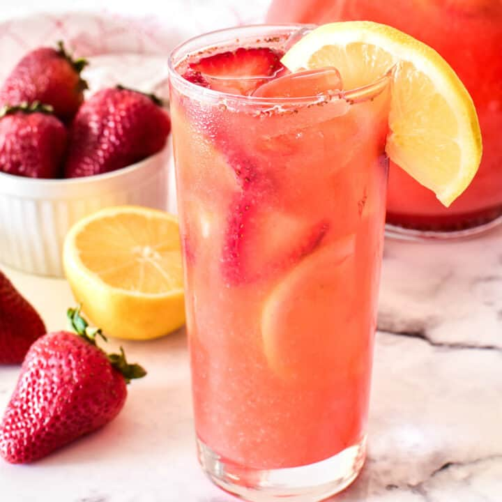

Strawberry Lemonade

Description
Who doesn't love an ice cold glass of lemonade on a hot summer day?
This recipe inludes just that with an extra strawberry flare.
Prepare this lemonade for you, friends, or even a lemonade stand - it's sure to be a crowd pleaser!
Ingredients
- Water
- Lemons
- Sugar/Artificial Sweetener
- Strawberries
- Ice
Steps
- Use a juicer (or hand squeeze) lemons. Add them to a water base
- Squeeze strawberries into juice and add them to the mixture as well
- For a sweeter taste, include extra sugar or artificial sweetener
- Serve over ice and garnish with a lemon wedge and split strawberry!